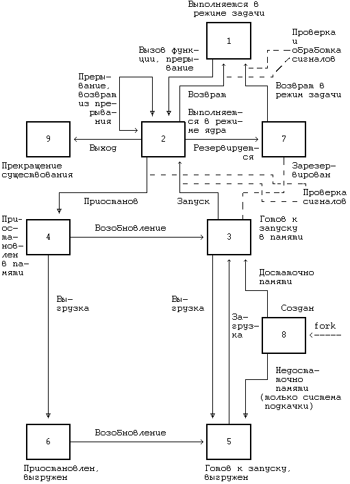
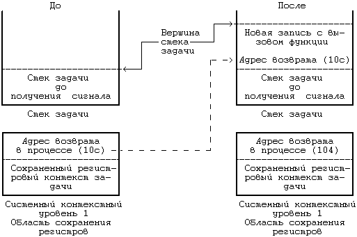

Сигналы сообщают процессам о возникновении асинхронных событий. Посылка сигналов производится процессами - друг другу, с помощью функции kill, - или ядром. В версии V (вторая редакция) системы UNIX существуют 19 различных сигналов, которые можно классифицировать следующим образом:
- Сигналы, посылаемые в случае завершения выполнения процесса, то есть тогда, когда процесс выполняет функцию exit или функцию signal с параметром death of child (гибель потомка);
- Сигналы, посылаемые в случае возникновения вызываемых процессом особых ситуаций, таких как обращение к адресу, находящемуся за пределами виртуального адресного пространства процесса, или попытка записи в область памяти, открытую только для чтения (например, текст программы), или попытка исполнения привилегированной команды, а также различные аппаратные ошибки;
- Сигналы, посылаемые во время выполнения системной функции при возникновении неисправимых ошибок, таких как исчерпание системных ресурсов во время выполнения функции exec после освобождения исходного адресного пространства (см. раздел 7.5);
- Сигналы, причиной которых служит возникновение во время выполнения системной функции совершенно неожиданных ошибок, таких как обращение к несуществующей системной функции (процесс передал номер системной функции, который не соответствует ни одной из имеющихся функций), запись в канал, не связанный ни с одним из процессов чтения, а также использование недопустимого значения в параметре "reference" системной функции lseek. Казалось бы, более логично в таких случаях вместо посылки сигнала возвращать код ошибки, однако с практической точки зрения для аварийного завершения процессов, в которых возникают подобные ошибки, более предпочтительным является именно использование сигналов (*);
- Сигналы, посылаемые процессу, который выполняется в режиме задачи, например, сигнал тревоги (alarm), посылаемый по истечении определенного периода времени, или произвольные сигналы, которыми обмениваются процессы, использующие функцию kill;
- Сигналы, связанные с терминальным взаимодействием, например, с "зависанием" терминала (когда сигнал-носитель на терминальной линии прекращается по любой причине) или с нажатием клавиш "break" и "delete" на клавиатуре терминала;
- Сигналы, с помощью которых производится трассировка выполнения процесса. Условия применения сигналов каждой группы будут рассмотрены в этой и последующих главах.
Концепция сигналов имеет несколько аспектов, связанных с тем, каким образом ядро посылает сигнал процессу, каким образом процесс обрабатывает сигнал и управляет реакцией на него. Посылая сигнал процессу, ядро устанавливает в единицу разряд в поле сигнала записи таблицы процессов, соответствующий типу сигнала. Если процесс находится в состоянии приостанова с приоритетом, допускающим прерывания, ядро возобновит его выполнение. На этом роль отправителя сигнала (процесса или ядра) исчерпывается. Процесс может запоминать сигналы различных типов, но не имеет возможности запоминать количество получаемых сигналов каждого типа. Например, если процесс получает сигнал о "зависании" или об удалении процесса из системы, он устанавливает в единицу соответствующие разряды в поле сигналов таблицы процессов, но не может сказать, сколько экземпляров сигнала каждого типа он получил.
Ядро проверяет получение сигнала, когда процесс собирается перейти из режима ядра в режим задачи, а также когда он переходит в состояние приостанова или выходит из этого состояния с достаточно низким приоритетом планирования (см. Рисунок 7.6). Ядро обрабатывает сигналы только тогда, когда процесс возвращается из режима ядра в режим задачи. Таким образом, сигнал не оказывает немедленного воздействия на поведение процесса, исполняемого в режиме ядра. Если процесс исполняется в режиме задачи, а ядро тем временем обрабатывает прерывание, послужившее поводом для посылки процессу сигнала, ядро распознает и обработает сигнал по выходе из прерывания. Таким образом, процесс не будет исполняться в режиме задачи, пока какие-то сигналы остаются необработанными.
На Рисунке 7.7 представлен алгоритм, с помощью которого ядро определяет, получил ли процесс сигнал или нет. Условия, в которых формируются сигналы типа "гибель потомка", будут рассмотрены позже. Мы также увидим, что процесс может игнорировать отдельные сигналы, если воспользуется функцией signal. В алгоритме issig ядро просто гасит индикацию тех сигналов, на которые процесс не желает обращать внимание, и привлекает внимание процесса ко всем остальным сигналам.

Рисунок 7.6. Диаграмма переходов процесса из состояние в состояние с указанием моментов проверки и обработки сигналов
алгоритм issig /* проверка получения сигналов */
входная информация: отсутствует
выходная информация: "истина", если процесс получил сигна-
лы, которые его интересуют
"ложь" - в противном случае
{
выполнить пока (поле в записи таблицы процессов, содер-
жащее индикацию о получении сигнала, хранит ненулевое
значение)
{
найти номер сигнала, посланного процессу;
если (сигнал типа "гибель потомка")
{
если (сигналы данного типа игнорируются)
освободить записи таблицы процессов, которые
соответствуют потомкам, прекратившим существо-
вание;
в противном случае если (сигналы данного типа при-
нимаются)
возвратить (истину);
}
в противном случае если (сигнал не игнорируется)
возвратить (истину);
сбросить (погасить) сигнальный разряд, установленный
в соответствующем поле таблицы процессов, хранящем
индикацию получения сигнала;
}
возвратить (ложь);
}
|
Рисунок 7.7. Алгоритм опознания сигналов
Ядро обрабатывает сигналы в контексте того процесса, который получает их, поэтому чтобы обработать сигналы, нужно запустить процесс. Существует три способа обработки сигналов: процесс завершается по получении сигнала, не обращает внимание на сигнал или выполняет особую (пользовательскую) функцию по его получении. Реакцией по умолчанию со стороны процесса, исполняемого в режиме ядра, является вызов функции exit, однако с помощью функции signal процесс может указать другие специальные действия, принимаемые по получении тех или иных сигналов.
Синтаксис вызова системной функции signal:
oldfunction = signal(signum,function);
где signum - номер сигнала, при получении которого будет выполнено действие, связанное с запуском пользовательской функции, function - адрес функции, oldfunction - возвращаемое функцией значение. Вместо адреса функции процесс может передавать вызываемой процедуре signal числа 1 и 0: если function = 1, процесс будет игнорировать все последующие поступления сигнала с номером signum (особый случай, связанный с игнорированием сигнала "гибель потомка", рассматривается в разделе 7.4), если = 0 (значение по умолчанию), процесс по получении сигнала в режиме ядра завершается. В пространстве процесса поддерживается массив полей для обработки сигналов, по одному полю на каждый определенный в системе сигнал. В поле, соответствующем сигналу с указанным номером, ядро сохраняет адрес пользовательской функции, вызываемой по получении сигнала процессом. Способ обработки сигналов одного типа не влияет на обработку сигналов других типов.
алгоритм psig /* обработка сигналов после проверки их
существования */
входная информация: отсутствует
выходная информация: отсутствует
{
выбрать номер сигнала из записи таблицы процессов;
очистить поле с номером сигнала;
если (пользователь ранее вызывал функцию signal, с по-
мощью которой сделал указание игнорировать сигнал дан-
ного типа)
возвратить управление;
если (пользователь указал функцию, которую нужно выпол-
нить по получении сигнала)
{
из пространства процесса выбрать пользовательский
виртуальный адрес функции обработки сигнала;
/* следующий оператор имеет нежелательные побочные
эффекты */
очистить поле в пространстве процесса, содержащее
адрес функции обработки сигнала;
внести изменения в пользовательский контекст:
искусственно создать в стеке задачи запись, ими-
тирующую обращение к функции обработки сигнала;
внести изменения в системный контекст:
записать адрес функции обработки сигнала в поле
счетчика команд, принадлежащее сохраненному ре-
гистровому контексту задачи;
возвратить управление;
}
если (сигнал требует дампирования образа процесса в па-
мяти)
{
создать в текущем каталоге файл с именем "core";
переписать в файл "core" содержимое пользовательско-
го контекста;
}
немедленно запустить алгоритм exit;
}
|
Рисунок 7.8. Алгоритм обработки сигналов
Обрабатывая сигнал (Рисунок 7.8), ядро определяет тип сигнала и очищает (гасит) разряд в записи таблицы процессов, соответствующий данному типу сигнала и установленный в момент получения сигнала процессом. Если функции обработки сигнала присвоено значение по умолчанию, ядро в отдельных случаях перед завершением процесса сбрасывает на внешний носитель (дампирует) образ процесса в памяти (см. упражнение 7.7). Дампирование удобно для программистов тем, что позволяет установить причину завершения процесса и посредством этого вести отладку программ. Ядро дампирует состояние памяти при поступлении сигналов, которые сообщают о каких-нибудь ошибках в выполнении процессов, как например, попытка исполнения запрещенной команды или обращение к адресу, находящемуся за пределами виртуального адресного пространства процесса. Ядро не дампирует состояние памяти, если сигнал не связан с программной ошибкой. Например, прерывание, вызванное нажатием клавиш "delete" или "break" на терминале, имеет своим результатом посылку сигнала, который сообщает о том, что пользователь хочет раньше времени завершить процесс, в то время как сигнал о "зависании" является свидетельством нарушения связи с регистрационным терминалом. Эти сигналы не связаны с ошибками в протекании процесса. Сигнал о выходе (quit), однако, вызывает сброс состояния памяти, несмотря на то, что он возникает за пределами выполняемого процесса. Этот сигнал, обычно вызываемый одновременным нажатием клавиш <Ctrl/|>, дает программисту возможность получать дамп состояния памяти в любой момент после запуска процесса, что бывает необходимо, если процесс попадает в бесконечный цикл выполнения одних и тех же команд (зацикливается).
Если процесс получает сигнал, на который было решено не обращать внимание, выполнение процесса продолжается так, словно сигнала и не было. Поскольку ядро не сбрасывает значение соответствующего поля, свидетельствующего о необходимости игнорирования сигнала данного типа, то когда сигнал поступит вновь, процесс опять не обратит на него внимание. Если процесс получает сигнал, реагирование на который было признано необходимым, сразу по возвращении процесса в режим задачи выполняется заранее условленное действие, однако прежде чем перевести процесс в режим задачи, ядро еще должно предпринять следующие шаги:
- Ядро обращается к сохраненному регистровому контексту задачи и выбирает значения счетчика команд и указателя вершины стека, которые будут возвращены пользовательскому процессу.
- Сбрасывает в пространстве процесса прежнее значение поля функции обработки сигнала и присваивает ему значение по умолчанию.
- Создает новую запись в стеке задачи, в которую, при необходимости выделяя дополнительную память, переписывает значения счетчика команд и указателя вершины стека, выбранные ранее из сохраненного регистрового контекста задачи. Стек задачи будет выглядеть так, как будто процесс произвел обращение к пользовательской функции (обработки сигнала) в той точке, где он вызывал системную функцию или где ядро прервало его выполнение (перед опознанием сигнала).
- Вносит изменения в сохраненный регистровый контекст задачи: устанавливает значение счетчика команд равным адресу функции обработки сигнала, а значение указателя вершины стека равным глубине стека задачи.
Таким образом, по возвращении из режима ядра в режим задачи процесс приступит к выполнению функции обработки сигнала; после ее завершения управление будет передано на то место в программе пользователя, где было произведено обращение к системной функции или произошло прерывание, тем самым как бы имитируется выход из системной функции или прерывания.
В качестве примера можно привести программу (Рисунок 7.9), которая принимает сигналы о прерывании (SIGINT) и сама посылает их (в результате выполнения функции kill). На Рисунке 7.10 представлены фрагменты программного кода, полученные в результате дисассемблирования загрузочного модуля в операционной среде VAX 11/780. При выполнении процесса обращение к библиотечной процедуре kill имеет адрес (шестнадцатеричный) ee; эта процедура в свою очередь, прежде чем вызвать системную функцию kill, исполняет команду chmk (перевести процесс в режим ядра) по адресу 10a. Адрес возврата из системной функции - 10c. Во время исполнения системной функции ядро посылает процессу сигнал о прерывании. Ядро обращает внимание на этот сигнал тогда, когда процесс собирается вернуться в режим задачи, выбирая из сохраненного регистрового контекста адрес возврата 10c и помещая его в стек задачи. При этом адрес функции обработки сигнала, 104, ядро помещает в сохраненный регистровый контекст задачи. На Рисунке 7.11 показаны различные состояния стека задачи и сохраненного регистрового контекста.
В рассмотренном алгоритме обработки сигналов имеются некоторые несоответствия. Первое из них и наиболее важное связано с очисткой перед возвращением процесса в режим задачи того поля в пространстве процесса, которое содержит адрес пользовательской функции обработки сигнала. Если процессу снова понадобится обработать сигнал, ему опять придется прибегнуть к помощи системной функции signal. При этом могут возникнуть нежелательные последствия: например, могут создаться условия для конкуренции, если второй раз сигнал поступит до того, как процесс получит возможность запустить системную функцию. Поскольку процесс выполняется в режиме задачи, ядру следовало бы произвести переключение контекста, чтобы увеличить тем самым шансы процесса на получение сигнала до момента сброса значения поля функции обработки сигнала.
#include <signal.h>
main()
{
extern catcher();
signal(SIGINT,catcher);
kill(0,SIGINT);
}
catcher()
{
}
|
Рисунок 7.9. Исходный текст программы приема сигналов
**** VAX DISASSEMBLER ****
_main()
e4:
e6: pushab Ox18(pc)
ec: pushl $Ox2
# в следующей строке вызывается функция signal
ee: calls $Ox2,Ox23(pc)
f5: pushl $Ox2
f7: clrl -(sp)
# в следующей строке вызывается библиотечная процеду-
ра kill
f9: calls $Ox2,Ox8(pc)
100: ret
101: halt
102: halt
103: halt
_catcher()
104:
106: ret
107: halt
_kill()
108:
# в следующей строке вызывается внутреннее прерывание
операционной системы
10a: chmk $Ox25
10c: bgequ Ox6 <Ox114>
10e: jmp Ox14(pc)
114: clrl r0
116: ret |
|
Рисунок 7.10. Результат дисассемблирования программы приема сигналов

Рисунок 7.11. Стек задачи и область сохранения структур ядра
до и после получения сигнала
Эту ситуацию можно разобрать на примере программы, представленной на Рисунке 7.12. Процесс обращается к системной функции signal для того, чтобы дать указание принимать сигналы о прерываниях и исполнять по их получении функцию sigcatcher. Затем он порождает новый процесс, запускает системную функцию nice, позволяющую сделать приоритет запуска процесса-родителя ниже приоритета его потомка (см. главу 8), и входит в бесконечный цикл. Порожденный процесс задерживает свое выполнение на 5 секунд, чтобы дать родительскому процессу время исполнить системную функцию nice и снизить свой приоритет. После этого порожденный процесс входит в цикл, в каждой итерации которого он посылает родительскому процессу сигнал о прерывании (посредством обращения к функции kill). Если в результате ошибки, например, из-за того, что родительский процесс больше не существует, kill завершается, то завершается и порожденный процесс. Вся идея состоит в том, что родительскому процессу следует запускать функцию обработки сигнала при каждом получении сигнала о прерывании. Функция обработки сигнала выводит сообщение и снова обращается к функции signal при очередном появлении сигнала о прерывании, родительский же процесс продолжает исполнять циклический набор команд.
Однако, возможна и следующая очередность наступления событий:
- Порожденный процесс посылает родительскому процессу сигнал о прерывании.
- Родительский процесс принимает сигнал и вызывает функцию обработки сигнала, но резервируется ядром, которое производит переключение контекста до того, как функция signal будет вызвана повторно.
- Снова запускается порожденный процесс, который посылает родительскому процессу еще один сигнал о прерывании.
- Родительский процесс получает второй сигнал о прерывании, но перед тем он не успел сделать никаких распоряжений относительно способа обработки сигнала. Когда выполнение родительского процесса будет возобновлено, он завершится.
#include <signal.h>
sigcatcher()
{
printf("PID %d принял сигнал\n",getpid()); /* печать
PID */
signal(SIGINT,sigcatcher);
}
main()
{
int ppid;
signal(SIGINT,sigcatcher);
if (fork() == 0)
{
/* дать процессам время для выполнения установок */
sleep(5); /* библиотечная функция приостанова на
5 секунд */
ppid = getppid(); /* получить идентификатор родите-
ля */
for (;;)
if (kill(ppid,SIGINT) == -1)
exit();
}
/* чем ниже приоритет, тем выше шансы возникновения кон-
куренции */
nice(10);
for (;;)
;
}
|
Рисунок 7.12. Программа, демонстрирующая возникновение соперничества между процессами в ходе обработки сигналов
В программе описывается именно такое поведение процессов, поскольку вызов родительским процессом функции nice приводит к тому, что ядро будет чаще запускать на выполнение порожденный процесс.
По словам Ричи (эти сведения были получены в частной беседе), сигналы были задуманы как события, которые могут быть как фатальными, так и проходящими незаметно, которые не всегда обрабатываются, поэтому в ранних версиях системы конкуренция процессов, связанная с посылкой сигналов, не фиксировалась. Тем не менее, она представляет серьезную проблему в тех программах, где осуществляется прием сигналов. Эта проблема была бы устранена, если бы поле описания сигнала не очищалось по его получении. Однако, такое решение породило бы новую проблему: если поступающий сигнал принимается, а поле очищено, вложенные обращения к функции обработки сигнала могут переполнить стек. С другой стороны, ядро могло бы сбросить значение функции обработки сигнала, тем самым делая распоряжение игнорировать сигналы данного типа до тех пор, пока пользователь вновь не укажет, что нужно делать по получении подобных сигналов. Такое решение предполагает потерю информации, так как процесс не в состоянии узнать, сколько сигналов им было получено. Однако, информации при этом теряется не больше, чем в том случае, когда процесс получает большое количество сигналов одного типа до того, как получает возможность их обработать. В системе BSD, наконец, процесс имеет возможность блокировать получение сигналов и снимать блокировку при новом обращении к системной функции; когда процесс снимает блокировку сигналов, ядро посылает процессу все сигналы, отложенные (повисшие) с момента установки блокировки. Когда процесс получает сигнал, ядро автоматически блокирует получение следующего сигнала до тех пор, пока функция обработки сигнала не закончит работу. В этих действиях ядра наблюдается аналогия с тем, как ядро реагирует на аппаратные прерывания: оно блокирует появление новых прерываний на время обработки предыдущих.
Второе несоответствие в обработке сигналов связано с приемом сигналов, поступающих во время исполнения системной функции, когда процесс приостановлен с допускающим прерывания приоритетом. Сигнал побуждает процесс выйти из приостанова (с помощью longjump), вернуться в режим задачи и вызвать функцию обработки сигнала. Когда функция обработки сигнала завершает работу, происходит то, что процесс выходит из системной функции с ошибкой, сообщающей о прерывании ее выполнения. Узнав об ошибке, пользователь запускает системную функцию повторно, однако более удобно было бы, если бы это действие автоматически выполнялось ядром, как в системе BSD.
Третье несоответствие проявляется в том случае, когда процесс игнорирует поступивший сигнал. Если сигнал поступает в то время, когда процесс находится в состоянии приостанова с допускающим прерывания приоритетом, процесс возобновляется, но не выполняет longjump. Другими словами, ядро узнает о том, что процесс проигнорировал поступивший сигнал только после возобновления его выполнения. Логичнее было бы оставить процесс в состоянии приостанова. Однако, в момент посылки сигнала к пространству процесса, в котором ядро хранит адрес функции обработки сигнала, может отсутствовать доступ. Эта проблема может быть решена путем запоминания адреса функции обработки сигнала в записи таблицы процессов, обращаясь к которой, ядро получало бы возможность решать вопрос о необходимости возобновления процесса по получении сигнала. С другой стороны, процесс может немедленно вернуться в состояние приостанова (по алгоритму sleep), если обнаружит, что в его возобновлении не было необходимости. Однако, пользовательские процессы не имеют возможности осознавать собственное возобновление, поскольку ядро располагает точку входа в алгоритм sleep внутри цикла с условием продолжения (см. главу 2), переводя процесс вновь в состояние приостанова, если ожидаемое процессом событие в действительности не имело места.
Ко всему сказанному выше следует добавить, что ядро обрабатывает сигналы типа "гибель потомка" не так, как другие сигналы. В частности, когда процесс узнает о получении сигнала "гибель потомка", он выключает индикацию сигнала в соответствующем поле записи таблицы процессов и по умолчанию действует так, словно никакого сигнала и не поступало. Назначение сигнала "гибель потомка" состоит в возобновлении выполнения процесса, приостановленного с допускающим прерывания приоритетом. Если процесс принимает такой сигнал, он, как и во всех остальных случаях, запускает функцию обработки сигнала. Действия, предпринимаемые ядром в том случае, когда процесс игнорирует поступивший сигнал этого типа, будут описаны в разделе 7.4. Наконец, когда процесс вызвал функцию signal с параметром "гибель потомка" (death of child), ядро посылает ему соответствующий сигнал, если он имеет потомков, прекративших существование. В разделе 7.4 на этом моменте мы остановимся более подробно.
Несмотря на то, что в системе UNIX процессы идентифицируются уникальным кодом (PID), системе иногда приходится использовать для идентификации процессов номер "группы", в которую они входят. Например, процессы, имеющие общего предка в лице регистрационного shell'а, взаимосвязаны, и поэтому когда пользователь нажимает клавиши "delete" или "break", или когда терминальная линия "зависает", все эти процессы получают соответствующие сигналы. Ядро использует код группы процессов для идентификации группы взаимосвязанных процессов, которые при наступлении определенных событий должны получать общий сигнал. Код группы запоминается в таблице процессов; процессы из одной группы имеют один и тот же код группы.
Для того, чтобы присвоить коду группы процессов начальное значение, приравняв его коду идентификации процесса, следует воспользоваться системной функцией setpgrp. Синтаксис вызова функции:
grp = setpgrp();
где grp - новый код группы процессов. При выполнении функции fork процесс-потомок наследует код группы своего родителя. Использование функции setpgrp при назначении для процесса операторского терминала имеет важные особенности, на которые стоит обратить внимание (см. раздел 10.3.5).
Для посылки сигналов процессы используют системную функцию kill. Синтаксис вызова функции:
kill(pid,signum)
где в pid указывается адресат посылаемого сигнала (область действия сигнала), а в signum - номер посылаемого сигнала. Связь между значением pid и совокупностью выполняющихся процессов следующая:
- Если pid - положительное целое число, ядро посылает сигнал процессу с идентификатором pid.
- Если значение pid равно 0, сигнал посылается всем процессам, входящим в одну группу с процессом, вызвавшим функцию kill.
- Если значение pid равно -1, сигнал посылается всем процессам, у которых реальный код идентификации пользователя совпадает с тем, под которым исполняется процесс, вызвавший функцию kill (об этих кодах более подробно см. в разделе 7.6). Если процесс, пославший сигнал, исполняется под кодом идентификации суперпользователя, сигнал рассылается всем процессам, кроме процессов с идентификаторами 0 и 1.
- Если pid - отрицательное целое число, но не -1, сигнал посылается всем процессам, входящим в группу с номером, равным абсолютному значению pid.
Во всех случаях, если процесс, пославший сигнал, исполняется под кодом идентификации пользователя, не являющегося суперпользователем, или если коды идентификации пользователя (реальный и исполнительный) у этого процесса не совпадают с соответствующими кодами процесса, принимающего сигнал, kill завершается неудачно.
В программе, приведенной на Рисунке 7.13, главный процесс сбрасывает установленное ранее значение номера группы и порождает 10 новых процессов. При рождении каждый процесс-потомок наследует номер группы процессов своего родителя, однако, процессы, созданные в нечетных итерациях цикла, сбрасывают это значение. Системные функции getpid и getpgrp возвращают значения кода идентификации выполняемого процесса и номера группы, в которую он входит, а функция pause приостанавливает выполнение процесса до момента получения сигнала. В конечном итоге родительский процесс запускает функцию kill и посылает сигнал о прерывании всем процессам, входящим в одну с ним группу. Ядро посылает сигнал пяти "четным" процессам, не сбросившим унаследованное значение номера группы, при этом пять "нечетных" процессов продолжают свое выполнение.
#include <signal.h>
main()
{
register int i;
setpgrp();
for (i = 0; i < 10; i++)
{
if (fork() == 0)
{
/* порожденный процесс */
if (i & 1)
setpgrp();
printf("pid = %d pgrp = %d\n",getpid(),getpgrp());
pause(); /* системная функция приостанова вы-
полнения */
}
}
kill(0,SIGINT);
}
|
Рисунок 7.13. Пример использования функции setpgrp
(*) Использование сигналов в некоторых обстоятельствах позволяет обнаружить ошибки при выполнении программ, не проверяющих код завершения вызываемых системных функций (сообщил Д.Ричи).
Предыдущая глава || Оглавление || Следующая глава